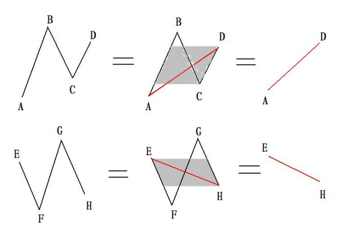
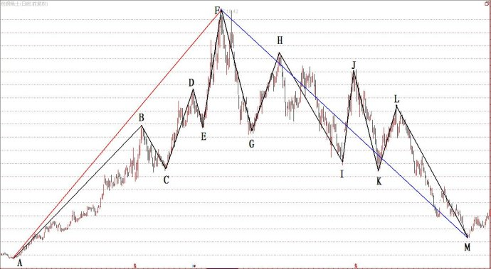
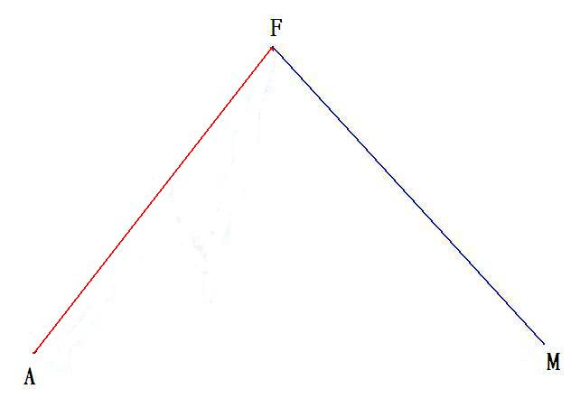

第286篇•《缠论》的分析（4）
谷为陵
如果价格走势都能够简化为笔，那问题就简单了，但在实际的走势中，简单形态只是少数，大多数是复杂形态。价格上涨趋势并非永远是以直线方式递进的，绝大多数是以大涨小回的振荡方式向上的（向下亦如此），当价格出现回折的时候，就可能会出现原有笔的破坏，形成笔的回折。当笔以波折的方式向上时，价格趋势看起来会变得波波折折的，犹如没有经过笔处理的杂乱K线组合，于是，为了明晰趋势形态，就需要将笔的组合再度进行简化，或者说对于趋势进行二次简化处理，这种二次简化方法就是引入线段的概念。
《缠论》对线段是这样描述的：“有了笔，那么线段就很简单了，线段至少有三笔，线段无非有两种，从向上一笔开始的，和从向下一笔开始的。……线段有一个最基本的前提，就是线段的前三笔，必须有重叠的部分，这个前提在前面可能没有特别强调，这里必须特别强调一次。线段至少有三笔，但并不是连续的三笔就一定构成线段，这三笔必须有重叠的部分。”（教你炒股票65）。
可见，线段是由有重叠部分的至少三笔构成的，如下图所示：

上图中的AB、BC、CD三笔因相互重叠（阴影部分），就可以构成一个线段AD，该线段是以向上笔开始，称为向上线段。而EF、FG、GH三笔相互重叠，也可以构成一个线段EH，该线段是以向下笔开始，称为向下线段。线段还有一个性质，它可以延伸，直至被反向笔破坏为止。下面我举一个实例加以说明，我截选了2006年10月底至2008年11月底包钢稀土的日K线图，其中，我用黑线代表笔，用红线代表向上线段，蓝线代表向下线段，如下图所示：

AF的整个上升趋势是AB、BC、CD、DE、EF这5笔组成的。其中，AB、BC、CD这三笔有重叠部分，故可以构成一线段AD。线段AD与DE笔、EF笔又有重叠部分，故AD线段可以一直延伸到F点，形成AF线段，以红线标示。所以，整个AF上升趋势，是由AF线段构成的。而FM的整个下降趋势是由FG、GH、HI、IJ、JK、KL、LM这7笔组成的，但这7笔均有相互重叠部分，可以连成一条延伸线段FM，以蓝线标示。经过线段的简化后，包钢稀土的整个上升与下降趋势就可简化为以下的“AF线段+FM线段”的组合图：

经过对比，这个简化图与日线图的区别是明显的。日线图看起来振荡很大，走势很复杂，尤其是下降趋势中的每次反弹的力度较大，会让人感到会有反转的可能。但通过笔的简化，特别是线段的二次简化后，就能够很清晰地看出价格下降的趋势，看着这样的线段趋势，投资者就不应该买进，至少不应该重仓买进，这样可以回避股价持续下跌的风险。
所以，《缠论》的一个很重要的目的，就是简化价格趋势形态，趋势形态经过简化后，就非常直观，很容易看清楚。为了简化价格趋势形态，《缠论》提出了4个相互递进的简化程序：
K线（结合律）→底分型与顶分型→笔→线段
有了这些元素的准备后，《缠论》就开始了最复杂的中枢的探讨了。
（未完待续）